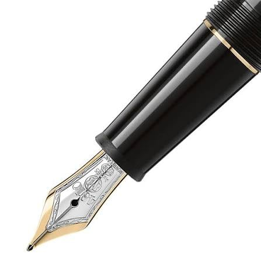
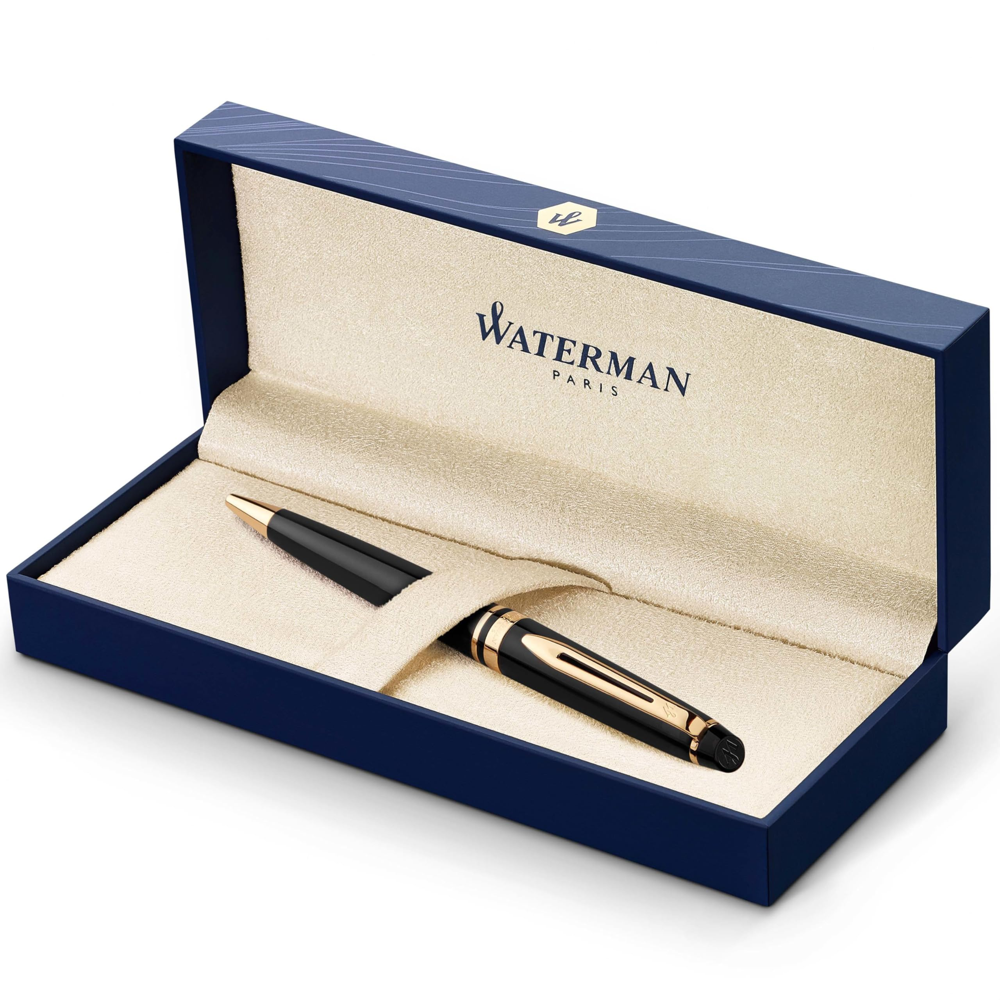
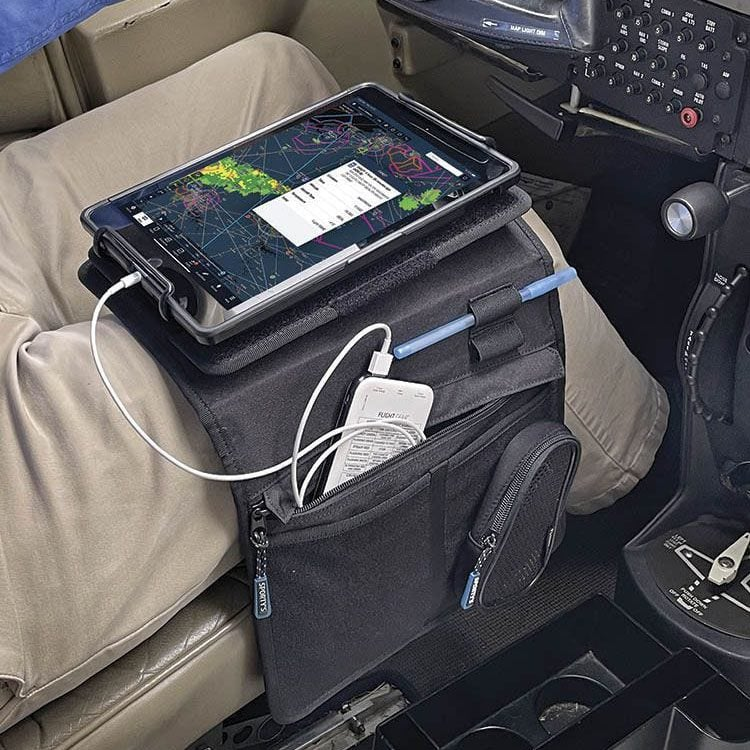
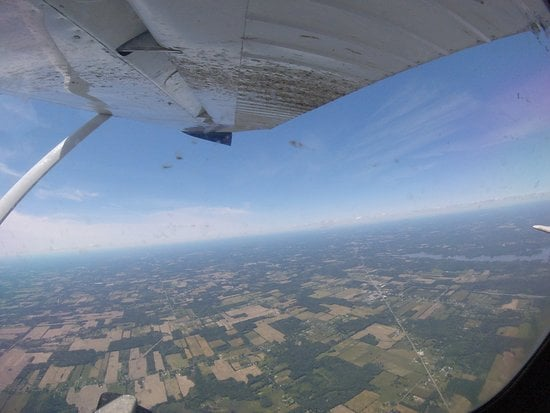
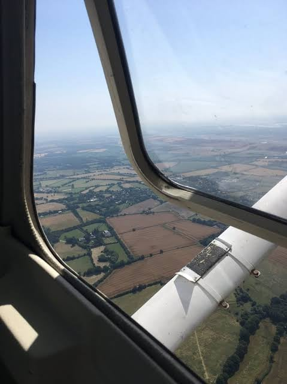
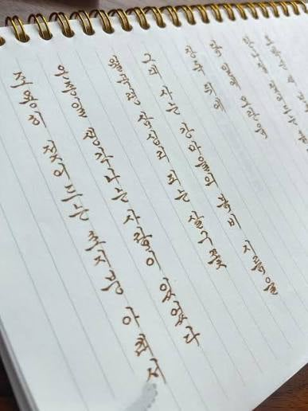
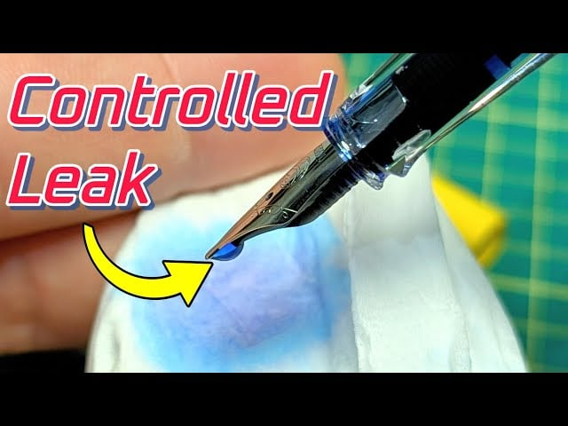
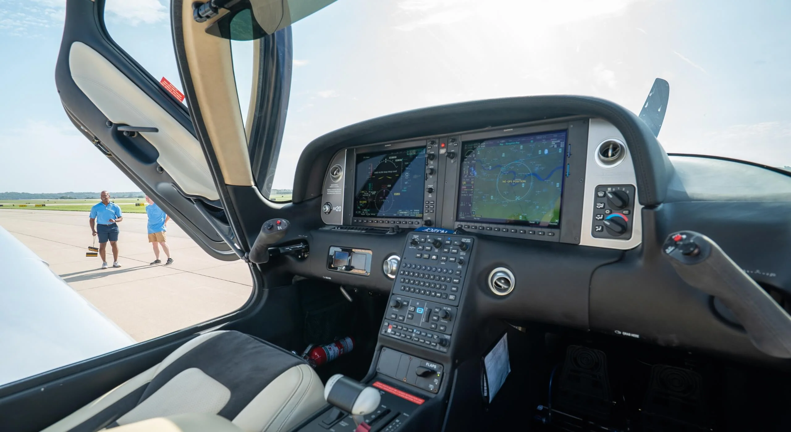
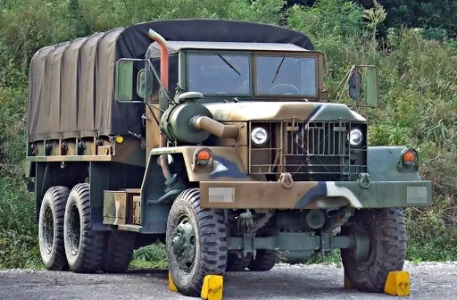
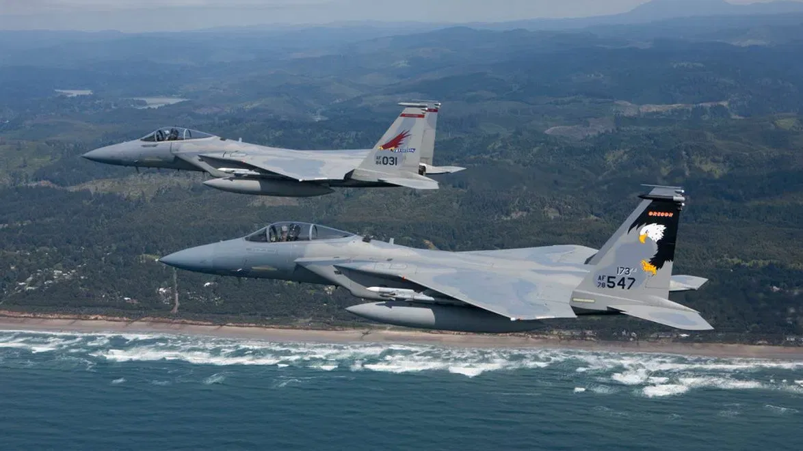

지금은 구경하기도 힘든 물건이지만
그래도 나름 미국에서는 감성으로 물려받거나 선물받아서
쓰는 애들이 종종 있는데

고등학교 갓 졸업해서 학생조종사로 왔던 내 학생이
워터맨이라는 브랜드를 자랑하길래
속으로 물맨 ㅋㅋㅋㅋㅋ 이지랄 하면서 존나 웃었다

문제는 우리가 만난곳이 비행학교였고
얘는 '아버지가 선물해주신 만년필' 이라는 감성 스토리를 부여하면서
첫 비행에 이 만년필을 들고타는 실수를 하게됨

대충 사족을 달자면 비행학교의 첫 비행은 대부분 투어느낌이다
교관이 대부분의 시간동안 조종간을 잡고
한 9000피트쯤 올라가서 비행이 이런거다~ 라고 알려주는건데

문제는 훈련기들은 기내에 가압이 되지 않는다
9000피트 상공의 기압과 공기에 그대로 노출된다는건데
여기서 큰 문제가 생김

이 씹새끼가 갑자기 펜을 집어들더니
이 순간의 기억을 아버지가 준 펜으로 기억하겠다면서
만년필 스크류캡을 돌려서 열기 시작함

만년필은 구멍이 뚫린 구조라 조금만 뭐가 잘못돼도
잉크가 흘러나옴, 근데 이걸 9천피트 상공에서 연다?
그냥 대참사가 일어나는거임
미국 연방항공청도 훈련기에서 탄산음료 마시는거 조심하라고
조종사에게 권장하는 메뉴얼이 실제로 존재함
이새끼가 이걸 열자마자 갑자기
기이이잉잇! 기이이이이이이잇! 이지랄 하면서
뭔 마법 쏘는것마냥 계기판에 잉크를 난사하기 시작함

그 당시 내가 교관으로 가르치던 SR22 기체 특성상
대부분의 계기판이 화면이었는데 ㄹㅇ 무슨
원한 있는 새끼마냥 화면에 잉크로 먹칠을 하는게 보임
그때 씨발 나도 채용된지 2주된 신임교관이었는데
얼굴에 잉크 묻은 채로 간신히 비행기 돌려서
공항으로 돌아왔다, 진짜 뒤지는 줄 알았음

옛날에 개드립에 적었던 글을 참고해보면 알겠지만
다행히 난 야수교 탑건이었고 이런 좆같은일이 처음이 아니라서
계기판 없이 엔진소리로 가늠하면서 착륙까지 해낼 수 있었다
원래는 비상선언 했어야 했는데 아득바득 안하고 내렸다, 기록에 남으니까
어쨌든 이새끼는 착륙하고 시동 끄자마자 내 손으로 비행 부적격 판정
결정 내리고 퇴학 시켰다

나중에 듣기로는 공군 주방위군 전투조종사에 합격해서
하와이에서 전투기 조종사 됐다고 들었는데
솔직히 후회 없다, 어쨌든 난 뒤질뻔 했으니까
탑승 휴대 금지품목 공지 매번 해야겠네